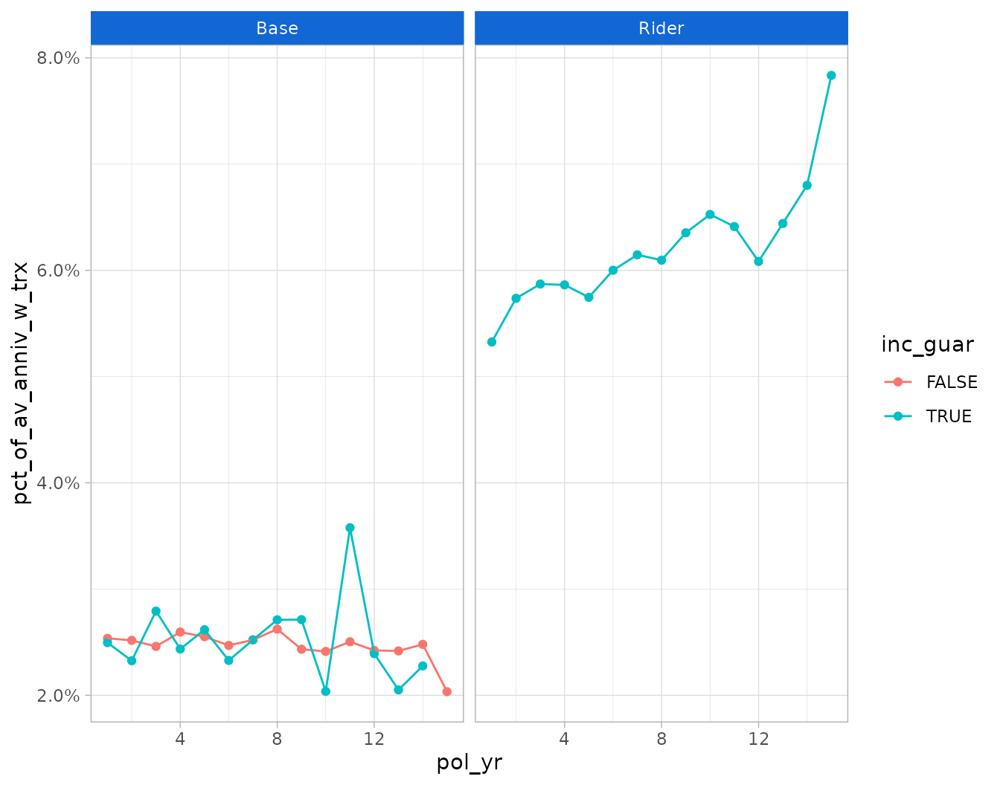

This article walks through an example of creating a transaction study using the actxps package. Unlike a termination study, transaction studies track events that can occur multiple times over the life of a policy. Often, transactions are expected to reoccur; for example, the utilization of a guaranteed income stream.
Key questions to answer in a transaction study are:
- What types of transactions occurred?
- What is the count, amount, and average size of observed transactions?
- What percentage of policies have transactions each exposure period?
- How do transactions compare to expectations?
- What is the rate of transaction amounts as a percentage of another value?
The example below walks through preparing data by adding transaction
information to a data frame with exposure-level records using the
add_transactions() function. Next, study results are
summarized using the trx_stats() function.
Simulated transaction and account value data
In this example, we’ll be using the census_dat,
withdrawals, and account_vals data sets. Each
data set is based on a theoretical block of deferred annuity business
with a guaranteed lifetime income benefit.
-
census_datcontains census-level information with one row per policy -
withdrawalscontains withdrawal transactions. There are 2 types of transactions in the data: “Base” (ordinary withdrawals) and “Rider” (guaranteed income payments). -
account_valscontains historical account values on policy anniversaries. This data will be used to calculate withdrawal rates as a percentage of account values.
The add_transactions() function
The add_transactions() function attaches transactions to
a data frame with exposure-level records. This data frame must have the
class exposed_df. For our example, we first need to convert
census_dat into exposure records using the
expose() function.1 This example will use policy year
exposures.
library(actxps)
#>
#> Attaching package: 'actxps'
#> The following object is masked from 'package:stats':
#>
#> filter
library(dplyr)
#>
#> Attaching package: 'dplyr'
#> The following objects are masked from 'package:stats':
#>
#> filter, lag
#> The following objects are masked from 'package:base':
#>
#> intersect, setdiff, setequal, union
exposed_data <- expose_py(census_dat, "2019-12-31", target_status = "Surrender")
exposed_data
#> Exposure data
#>
#> Exposure type: policy_year
#> Target status: Surrender
#> Study range: 1900-01-01 to 2019-12-31
#>
#> # A tibble: 141,252 × 15
#> pol_num status issue_date inc_guar qual age product gender wd_age premium
#> <int> <fct> <date> <lgl> <lgl> <int> <fct> <fct> <int> <dbl>
#> 1 1 Active 2014-12-17 TRUE FALSE 56 b F 77 370
#> 2 1 Active 2014-12-17 TRUE FALSE 56 b F 77 370
#> 3 1 Active 2014-12-17 TRUE FALSE 56 b F 77 370
#> 4 1 Active 2014-12-17 TRUE FALSE 56 b F 77 370
#> 5 1 Active 2014-12-17 TRUE FALSE 56 b F 77 370
#> 6 1 Active 2014-12-17 TRUE FALSE 56 b F 77 370
#> 7 2 Active 2007-09-24 FALSE FALSE 71 a F 71 708
#> 8 2 Active 2007-09-24 FALSE FALSE 71 a F 71 708
#> 9 2 Active 2007-09-24 FALSE FALSE 71 a F 71 708
#> 10 2 Active 2007-09-24 FALSE FALSE 71 a F 71 708
#> # ℹ 141,242 more rows
#> # ℹ 5 more variables: term_date <date>, pol_yr <int>, pol_date_yr <date>,
#> # pol_date_yr_end <date>, exposure <dbl>The withdrawals data has 4 columns that are required for
attaching transactions:
-
pol_num: policy number -
trx_date: transaction date -
trx_type: transaction type -
trx_amt: transaction amount
withdrawals
#> # A tibble: 160,130 × 4
#> pol_num trx_date trx_type trx_amt
#> <int> <date> <fct> <dbl>
#> 1 2 2007-10-05 Base 25
#> 2 2 2009-07-30 Base 12
#> 3 2 2010-02-22 Base 7
#> 4 2 2010-12-30 Base 52
#> 5 2 2012-05-07 Base 41
#> 6 2 2013-03-15 Base 1
#> 7 2 2013-12-06 Base 2
#> 8 2 2015-05-18 Base 2
#> 9 2 2016-05-10 Base 8
#> 10 2 2017-01-08 Base 2
#> # ℹ 160,120 more rowsThe grain of this data is one row per policy per transaction. The expectation is that the number of records in the transaction data will not match the number of rows in the exposure data. That is because policies could have zero or several transactions in a given exposure period.
The add_transactions() function uses a non-equivalent
join to associate each transaction with a policy number and a date
interval found in the exposure data. Then, transaction counts and
amounts are summarized such that there is one row per exposure period.
In the event there are multiple transaction types found in the data,
separate columns are created for each transaction type.
Using our example, we pass both the exposure and withdrawals data to
add_transactions(). The resulting data has the same number
of rows as original exposure data and 4 new columns:
-
trx_amt_Base: the sum of “Base” withdrawal transactions -
trx_amt_Rider: the sum of “Rider” withdrawal transactions -
trx_n_Base: the number of “Base” withdrawal transactions -
trx_n_Rider: the number of “Rider” withdrawal transactions
exposed_trx <- add_transactions(exposed_data, withdrawals)
#> Warning: Specifying `multiple = "error"` was deprecated in dplyr 1.1.1.
#> ℹ Please use `relationship = "many-to-one"` instead.
#> ℹ The deprecated feature was likely used in the actxps package.
#> Please report the issue at <https://github.com/mattheaphy/actxps/issues>.
#> This warning is displayed once every 8 hours.
#> Call `lifecycle::last_lifecycle_warnings()` to see where this warning was
#> generated.
glimpse(exposed_trx)
#> Rows: 141,252
#> Columns: 19
#> $ pol_num <int> 1, 1, 1, 1, 1, 1, 2, 2, 2, 2, 2, 2, 2, 2, 2, 2, 2, 2, …
#> $ status <fct> Active, Active, Active, Active, Active, Active, Active…
#> $ issue_date <date> 2014-12-17, 2014-12-17, 2014-12-17, 2014-12-17, 2014-…
#> $ inc_guar <lgl> TRUE, TRUE, TRUE, TRUE, TRUE, TRUE, FALSE, FALSE, FALS…
#> $ qual <lgl> FALSE, FALSE, FALSE, FALSE, FALSE, FALSE, FALSE, FALSE…
#> $ age <int> 56, 56, 56, 56, 56, 56, 71, 71, 71, 71, 71, 71, 71, 71…
#> $ product <fct> b, b, b, b, b, b, a, a, a, a, a, a, a, a, a, a, a, a, …
#> $ gender <fct> F, F, F, F, F, F, F, F, F, F, F, F, F, F, F, F, F, F, …
#> $ wd_age <int> 77, 77, 77, 77, 77, 77, 71, 71, 71, 71, 71, 71, 71, 71…
#> $ premium <dbl> 370, 370, 370, 370, 370, 370, 708, 708, 708, 708, 708,…
#> $ term_date <date> NA, NA, NA, NA, NA, NA, NA, NA, NA, NA, NA, NA, NA, N…
#> $ pol_yr <int> 1, 2, 3, 4, 5, 6, 1, 2, 3, 4, 5, 6, 7, 8, 9, 10, 11, 1…
#> $ pol_date_yr <date> 2014-12-17, 2015-12-17, 2016-12-17, 2017-12-17, 2018-…
#> $ pol_date_yr_end <date> 2015-12-16, 2016-12-16, 2017-12-16, 2018-12-16, 2019-…
#> $ exposure <dbl> 1.00000000, 1.00000000, 1.00000000, 1.00000000, 1.0000…
#> $ trx_amt_Base <dbl> 0, 0, 0, 0, 0, 0, 25, 12, 7, 52, 41, 1, 2, 2, 8, 2, 44…
#> $ trx_amt_Rider <dbl> 0, 0, 0, 0, 0, 0, 0, 0, 0, 0, 0, 0, 0, 0, 0, 0, 0, 0, …
#> $ trx_n_Base <dbl> 0, 0, 0, 0, 0, 0, 1, 1, 1, 1, 1, 1, 1, 1, 1, 1, 1, 1, …
#> $ trx_n_Rider <dbl> 0, 0, 0, 0, 0, 0, 0, 0, 0, 0, 0, 0, 0, 0, 0, 0, 0, 0, …If we print exposed_trx, we can see that it is still an
exposed_df object, but now it has an additional attribute
for transaction types that have been attached.
exposed_trx
#> Exposure data
#>
#> Exposure type: policy_year
#> Target status: Surrender
#> Study range: 1900-01-01 to 2019-12-31
#> Transaction types: Base, Rider
#>
#>
#> # A tibble: 141,252 × 19
#> pol_num status issue_date inc_guar qual age product gender wd_age premium
#> <int> <fct> <date> <lgl> <lgl> <int> <fct> <fct> <int> <dbl>
#> 1 1 Active 2014-12-17 TRUE FALSE 56 b F 77 370
#> 2 1 Active 2014-12-17 TRUE FALSE 56 b F 77 370
#> 3 1 Active 2014-12-17 TRUE FALSE 56 b F 77 370
#> 4 1 Active 2014-12-17 TRUE FALSE 56 b F 77 370
#> 5 1 Active 2014-12-17 TRUE FALSE 56 b F 77 370
#> 6 1 Active 2014-12-17 TRUE FALSE 56 b F 77 370
#> 7 2 Active 2007-09-24 FALSE FALSE 71 a F 71 708
#> 8 2 Active 2007-09-24 FALSE FALSE 71 a F 71 708
#> 9 2 Active 2007-09-24 FALSE FALSE 71 a F 71 708
#> 10 2 Active 2007-09-24 FALSE FALSE 71 a F 71 708
#> # ℹ 141,242 more rows
#> # ℹ 9 more variables: term_date <date>, pol_yr <int>, pol_date_yr <date>,
#> # pol_date_yr_end <date>, exposure <dbl>, trx_amt_Base <dbl>,
#> # trx_amt_Rider <dbl>, trx_n_Base <dbl>, trx_n_Rider <dbl>The trx_stats() function
The actxps package’s workhorse function for summarizing transaction
experience is trx_stats(). This function returns a
trx_df object, which is a type of data frame containing
additional attributes about the transaction study.
At a minimum, a trx_df includes the following for each
transaction type (trx_type):
- The number of transactions (
trx_n) - The number of exposure periods with a transaction
(
trx_flag) - The sum of transactions (
trx_amt) - The total exposure (
exposure) - The average transaction amount when a transaction occurs
(
avg_trx) - The average transaction amount across all records
(
avg_all) - The transaction frequency when a transaction occurs
(
trx_freq = trx_n / trx_flag) - The transaction utilization
(
trx_util = trx_flag / exposure)
Optionally, a trx_df can also include:
- Any grouping variables attached to the input data
- Transaction amounts as a percentage of another value when a
transaction occurs (
pct_of_*_w_trx) - Transaction amounts as a percentage of another value across all
records (
pct_of_*_all)
To use trx_stats(), we simply need to pass it an
exposed_df object with transactions attached.2
trx_stats(exposed_trx)
#> Transaction study results
#>
#> Groups:
#> Study range: 1900-01-01 to 2019-12-31
#> Transaction types: Base, Rider
#>
#> # A tibble: 2 × 9
#> trx_type trx_n trx_flag trx_amt exposure avg_trx avg_all trx_freq trx_util
#> <chr> <dbl> <int> <dbl> <dbl> <dbl> <dbl> <dbl> <dbl>
#> 1 Base 60500 28224 1093899 124173 38.8 8.81 2.14 0.227
#> 2 Rider 77321 35941 2842729 124173 79.1 22.9 2.15 0.289The results show us that we specified no groups, which is why the output data contains a single row for each transaction type.
Grouped data
If the data frame passed into trx_stats() is grouped
using dplyr::group_by(), the resulting output will contain
one record for each transaction type for each unique group.
In the following, exposed_trx is grouped by the presence
of an income guarantee (inc_guar) before being passed to
trx_stats(). This results in four rows because we have two
types of transactions and two distinct values of
inc_guar.
exposed_trx |>
group_by(inc_guar) |>
trx_stats()
#> Transaction study results
#>
#> Groups: inc_guar
#> Study range: 1900-01-01 to 2019-12-31
#> Transaction types: Base, Rider
#>
#> # A tibble: 4 × 10
#> inc_guar trx_type trx_n trx_flag trx_amt exposure avg_trx avg_all trx_freq
#> <lgl> <chr> <dbl> <int> <dbl> <dbl> <dbl> <dbl> <dbl>
#> 1 FALSE Base 52939 24703 952629 48938 38.6 19.5 2.14
#> 2 FALSE Rider 0 0 0 48938 NaN 0 NaN
#> 3 TRUE Base 7561 3521 141270 75235 40.1 1.88 2.15
#> 4 TRUE Rider 77321 35941 2842729 75235 79.1 37.8 2.15
#> # ℹ 1 more variable: trx_util <dbl>Multiple grouping variables are allowed. Below, policy year
(pol_yr) is added as a second grouping variable.
exposed_trx |>
group_by(pol_yr, inc_guar) |>
trx_stats()
#> Transaction study results
#>
#> Groups: pol_yr, inc_guar
#> Study range: 1900-01-01 to 2019-12-31
#> Transaction types: Base, Rider
#>
#> # A tibble: 60 × 11
#> pol_yr inc_guar trx_type trx_n trx_flag trx_amt exposure avg_trx avg_all
#> <int> <lgl> <chr> <dbl> <int> <dbl> <dbl> <dbl> <dbl>
#> 1 1 FALSE Base 6077 2881 98287 7435 34.1 13.2
#> 2 1 FALSE Rider 0 0 0 7435 NaN 0
#> 3 1 TRUE Base 1370 633 21590 11106 34.1 1.94
#> 4 1 TRUE Rider 8077 3778 265312 11106 70.2 23.9
#> 5 2 FALSE Base 6091 2863 98413 6813 34.4 14.4
#> 6 2 FALSE Rider 0 0 0 6813 NaN 0
#> 7 2 TRUE Base 1183 559 18554 10158 33.2 1.83
#> 8 2 TRUE Rider 8232 3834 288114 10158 75.1 28.4
#> 9 3 FALSE Base 6016 2813 97285 6176 34.6 15.8
#> 10 3 FALSE Rider 0 0 0 6176 NaN 0
#> # ℹ 50 more rows
#> # ℹ 2 more variables: trx_freq <dbl>, trx_util <dbl>Expressing transactions as a percentage of another value
In a transaction study, we often want to express transaction amounts as a percentage of another value. For example, in a withdrawal study, withdrawal amounts divided by account values provides a withdrawal rate. In a study of benefit utilization, transactions can be divided by a maximum benefit amount to derive a benefit utilization rate. In addition, actual-to-expected rates can be calculated by dividing transactions by expected values.
If column names are passed to the percent_of argument of
trx_stats(), the output will contain 4 additional columns
for each “percent of” variable:
- The sum of each “percent of” variable
- The sum of each “percent of” variable when a transaction occurs.
These columns include the suffix
_w_trx. - Transaction amounts divided by each “percent of” variable
(
pct_of_{*}_all) - Transaction amounts divided by each “percent of” variable when a
transaction occurs (
pct_of_{*}_w_trx)
For our example, let’s assume we’re interested in examining
withdrawal transactions as a percentage of account values, which are
available in the account_vals data frame in the column
av_anniv.
# attach account values data
exposed_trx_w_av <- exposed_trx |>
left_join(account_vals, by = c("pol_num", "pol_date_yr"))
trx_res <- exposed_trx_w_av |>
group_by(pol_yr, inc_guar) |>
trx_stats(percent_of = "av_anniv")
glimpse(trx_res)
#> Rows: 60
#> Columns: 15
#> $ pol_yr <int> 1, 1, 1, 1, 2, 2, 2, 2, 3, 3, 3, 3, 4, 4, 4, 4, …
#> $ inc_guar <lgl> FALSE, FALSE, TRUE, TRUE, FALSE, FALSE, TRUE, TR…
#> $ trx_type <chr> "Base", "Rider", "Base", "Rider", "Base", "Rider…
#> $ trx_n <dbl> 6077, 0, 1370, 8077, 6091, 0, 1183, 8232, 6016, …
#> $ trx_flag <int> 2881, 0, 633, 3778, 2863, 0, 559, 3834, 2813, 0,…
#> $ trx_amt <dbl> 98287, 0, 21590, 265312, 98413, 0, 18554, 288114…
#> $ exposure <dbl> 7435, 7435, 11106, 11106, 6813, 6813, 10158, 101…
#> $ avg_trx <dbl> 34.11558, NaN, 34.10742, 70.22552, 34.37408, NaN…
#> $ avg_all <dbl> 13.219502, 0.000000, 1.943994, 23.889069, 14.444…
#> $ trx_freq <dbl> 2.109337, NaN, 2.164297, 2.137904, 2.127489, NaN…
#> $ trx_util <dbl> 0.38749159, 0.00000000, 0.05699622, 0.34017648, …
#> $ av_anniv_w_trx <dbl> 3875306, 0, 865046, 4982082, 3909786, 0, 797932,…
#> $ av_anniv <dbl> 9686914, 9686914, 14679001, 14679001, 9218561, 9…
#> $ pct_of_av_anniv_w_trx <dbl> 0.02536238, NaN, 0.02495821, 0.05325324, 0.02517…
#> $ pct_of_av_anniv_all <dbl> 0.010146369, 0.000000000, 0.001470809, 0.0180742…
autoplot() and autotable()
The autoplot() and autotable() functions
can be used to create visualizations and summary tables from
trx_df objects.
library(ggplot2)
.colors <- c("#eb15e4", "#7515eb")
theme_set(theme_light())
trx_res |>
# remove periods with zero transactions
filter(trx_n > 0) |>
autoplot(y = pct_of_av_anniv_w_trx) +
scale_color_manual(values = .colors) +
labs(title = "Observed Withdrawal Rates by Policy Year and Income Guarantee Presence")

Miscellaneous
Selecting and combining transaction types
The trx_types argument of trx_stats() can
be used to select a subset of transaction types that will appear in the
output.
trx_stats(exposed_trx, trx_types = "Base")
#> Transaction study results
#>
#> Groups:
#> Study range: 1900-01-01 to 2019-12-31
#> Transaction types: Base
#>
#> # A tibble: 1 × 9
#> trx_type trx_n trx_flag trx_amt exposure avg_trx avg_all trx_freq trx_util
#> <chr> <dbl> <int> <dbl> <dbl> <dbl> <dbl> <dbl> <dbl>
#> 1 Base 60500 28224 1093899 124173 38.8 8.81 2.14 0.227If the combine_trx argument is set to TRUE,
all transaction types will be combined in a group called “All” in the
output.
trx_stats(exposed_trx, combine_trx = TRUE)
#> Transaction study results
#>
#> Groups:
#> Study range: 1900-01-01 to 2019-12-31
#> Transaction types: Base, Rider
#>
#> # A tibble: 1 × 9
#> trx_type trx_n trx_flag trx_amt exposure avg_trx avg_all trx_freq trx_util
#> <chr> <dbl> <int> <dbl> <dbl> <dbl> <dbl> <dbl> <dbl>
#> 1 All 137821 64165 3936628 124173 61.4 31.7 2.15 0.517Partial exposures are removed as a default
As a default, trx_stats() removes partial exposures
before summarizing results. This is done to avoid complexity associated
with a lopsided skew in the timing of transactions. For example, if
transactions can occur on a monthly basis or annually at the beginning
of each policy year, partial exposures may not be appropriate. If a
policy had an exposure of 0.5 years and was taking withdrawals annually
at the beginning of the year, an argument could be made that the
exposure should instead be 1 complete year. If the same policy was
expected to take withdrawals 9 months into the year, it’s not clear if
the exposure should be 0.5 years or 0.5 / 0.75 years. To override this
treatment, set the full_exposures_only argument to
FALSE.
trx_stats(exposed_trx, full_exposures_only = FALSE)
#> Transaction study results
#>
#> Groups:
#> Study range: 1900-01-01 to 2019-12-31
#> Transaction types: Base, Rider
#>
#> # A tibble: 2 × 9
#> trx_type trx_n trx_flag trx_amt exposure avg_trx avg_all trx_freq trx_util
#> <chr> <dbl> <int> <dbl> <dbl> <dbl> <dbl> <dbl> <dbl>
#> 1 Base 69430 32379 1271778 132634. 39.3 9.59 2.14 0.244
#> 2 Rider 90700 42139 3361541 132634. 79.8 25.3 2.15 0.318Summary method
As noted above, the result of trx_stats() is a
trx_df object. If the summary() function is
applied to a trx_df object, the data will be summarized
again and return a higher level trx_df object.
If no additional arguments are passed, summary() returns
a single row of aggregate results for each transaction type.
summary(trx_res)
#> Transaction study results
#>
#> Groups:
#> Study range: 1900-01-01 to 2019-12-31
#> Transaction types: Base, Rider
#> Transactions as % of: av_anniv
#>
#> # A tibble: 2 × 13
#> trx_type trx_n trx_flag trx_amt exposure avg_trx avg_all trx_freq trx_util
#> <chr> <dbl> <int> <dbl> <dbl> <dbl> <dbl> <dbl> <dbl>
#> 1 Base 60500 28224 1093899 124173 38.8 8.81 2.14 0.227
#> 2 Rider 77321 35941 2842729 124173 79.1 22.9 2.15 0.289
#> # ℹ 4 more variables: av_anniv_w_trx <dbl>, av_anniv <dbl>,
#> # pct_of_av_anniv_w_trx <dbl>, pct_of_av_anniv_all <dbl>If additional variable names are passed to the summary()
function, then the output will group the data by those variables. In our
example, if pol_yr is passed to summary(), the
output will contain one row per policy year for each transaction
type.
summary(trx_res, pol_yr)
#> Transaction study results
#>
#> Groups: pol_yr
#> Study range: 1900-01-01 to 2019-12-31
#> Transaction types: Base, Rider
#> Transactions as % of: av_anniv
#>
#> # A tibble: 30 × 14
#> pol_yr trx_type trx_n trx_flag trx_amt exposure avg_trx avg_all trx_freq
#> <int> <chr> <dbl> <int> <dbl> <dbl> <dbl> <dbl> <dbl>
#> 1 1 Base 7447 3514 119877 18541 34.1 6.47 2.12
#> 2 1 Rider 8077 3778 265312 18541 70.2 14.3 2.14
#> 3 2 Base 7274 3422 116967 16971 34.2 6.89 2.13
#> 4 2 Rider 8232 3834 288114 16971 75.1 17.0 2.15
#> 5 3 Base 7061 3309 116357 15397 35.2 7.56 2.13
#> 6 3 Rider 8204 3817 294795 15397 77.2 19.1 2.15
#> 7 4 Base 6596 3080 114987 13790 37.3 8.34 2.14
#> 8 4 Rider 7960 3715 283763 13790 76.4 20.6 2.14
#> 9 5 Base 6093 2847 109918 12234 38.6 8.98 2.14
#> 10 5 Rider 7536 3521 264939 12234 75.2 21.7 2.14
#> # ℹ 20 more rows
#> # ℹ 5 more variables: trx_util <dbl>, av_anniv_w_trx <dbl>, av_anniv <dbl>,
#> # pct_of_av_anniv_w_trx <dbl>, pct_of_av_anniv_all <dbl>Similarly, if inc_guar is passed to
summary(), the output will contain a row for each
transaction type and unique value in inc_guar.
summary(trx_res, inc_guar)
#> Transaction study results
#>
#> Groups: inc_guar
#> Study range: 1900-01-01 to 2019-12-31
#> Transaction types: Base, Rider
#> Transactions as % of: av_anniv
#>
#> # A tibble: 4 × 14
#> inc_guar trx_type trx_n trx_flag trx_amt exposure avg_trx avg_all trx_freq
#> <lgl> <chr> <dbl> <int> <dbl> <dbl> <dbl> <dbl> <dbl>
#> 1 FALSE Base 52939 24703 952629 48938 38.6 19.5 2.14
#> 2 FALSE Rider 0 0 0 48938 NaN 0 NaN
#> 3 TRUE Base 7561 3521 141270 75235 40.1 1.88 2.15
#> 4 TRUE Rider 77321 35941 2842729 75235 79.1 37.8 2.15
#> # ℹ 5 more variables: trx_util <dbl>, av_anniv_w_trx <dbl>, av_anniv <dbl>,
#> # pct_of_av_anniv_w_trx <dbl>, pct_of_av_anniv_all <dbl>Column names
As a default, add_transactions() assumes the transaction
data frame (trx_data) uses the following naming
conventions:
- The policy number column is called
pol_num - The transaction date column is called
trx_date - The transaction type column is called
trx_type - The transaction amount column is called
trx_amt
These default names can be overridden using the
col_pol_num, col_trx_date,
col_trx_type, and col_trx_amt arguments.
For example, if the transaction type column was called
transaction_code in our data, we could write:
exposed_data |>
add_transactions(withdrawals, col_trx_type = "transaction_code")Similarly, trx_stats() assumes the input data uses the
name exposure for exposures. This default can be overridden
using the argument col_exposure.
Limitations
The trx_stats() function does not produce any
calculations related to the persistence of transactions from exposure
period to exposure period.